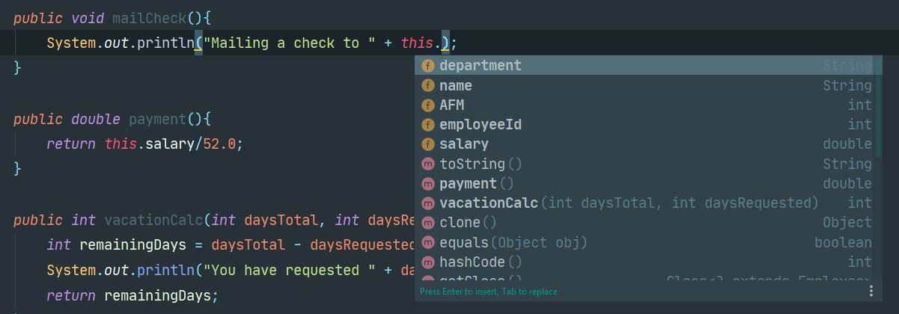

ΔΩΡΕΑΝ ΜΑΘΗΜΑΤΑ JAVA
Στο σημερινό δωρεάν μάθημα Java θα αναφερθούμε και θα εξηγήσουμε με
απλά παραδείγματα την χρήση της λέξης κλειδί this. Αν
και ακόμα δεν έχουμε προχωρήσει αρκετά στην θεωρία του object-oriented
προγραμματισμού, θεωρώ ότι γνωρίζοντας από τώρα την χρησιμότητα του this
θα μας βοηθήσει πολύ να κατανοήσουμε κάποιες άλλες έννοιες στις οποίες
θα αναφερθούμε αργότερα.
Τι σημαίνει λοιπόν το this? Με πολύ απλά λόγια το this είναι
η αναφορά στο αντικείμενο που πρόκειται να γεννηθεί από την κλάση. Αν
είναι λοιπόν αναφέρεται στο αντικείμενο που πρόκειται να γεννηθεί τότε
γράφοντας this και τελεία (this.) θα πρέπει να
δούμε όλες τις μεταβλητές και μεθόδους τις οποίες περιέχει το
αντικείμενο και αυτό ακριβώς γίνεται.

Στην κλάση Employee, που είχαμε αναπτύξει στην προηγούμενη
ενότητα, είχαμε δημιουργήσει τρεις μεθόδους (mailCheck( ), payment( ) ,
vacationCalc( ) ) οι οποίες είτε έκαναν αριθμητικές πράξεις είτε
απλά εκτύπωναν τις τιμές από τις instance μεταβλητές. Προς
υπενθύμιση σας, instance μεταβλητές ονομάζουμε τις μεταβλητές
που ανήκουν στο αντικείμενο, ενώ τι ίδιο το αντικείμενο στον
προγραμματισμό ονομάζεται instance. H διαδικασία δημιουργίας
ενός αντικειμένου όπως την έχουμε δει ονομάζεται instantiation.
Σε αυτή την κλάση Employee, αναφερόμασταν στις μεταβλητές του
αντικειμένου μέσα από τις μεθόδους μας. Ο μόνος τρόπος για να μπορεί
να λειτουργήσει μια τέτοια διαδικασία είναι εάν έχουμε πρόσβαση στο
reference του αντικειμένου που πρόκειται να δημιουργηθεί. Μα εμείς
δεν καλέσαμε κανένα reference κάποιου αντικειμένου, απλά γράψαμε τα
ονόματα των μεταβλητών της κλάσης που θέλουμε να χρησιμοποιήσουμε
όπως δείχνει το πιο κάτω παράδειγμα:
public void mailCheck(){
System.out.println("Mailing a check to " + name);
}
Στην mailCheck( ) μέθοδο απλά καλέσαμε την name instance variable
χωρίς να αναφερθούμε σε κάποιο αντικείμενο. Πως αυτό είναι δυνατόν? Εδώ
λοιπόν μας βοηθάει η java. Ο compiler της java αντιλαμβάνεται ότι
προσπαθούμε να αποκτήσουμε πρόσβαση στην instance μεταβλητή name και
προσθέτει το this μπροστά από το όνομα για εμάς. Αν θέλαμε να γράψουμε
απολύτως σωστά τον κώδικα της Employee, θα πρέπει να αλλάξουμε τον
κώδικα της ως εξής:
Employee.java
package com.mycompany;
class Employee{
public String name;
public int AFM;
public int employeeId;
public double salary;
public String department;
public void mailCheck(){
System.out.println("Mailing a check to " + this.name);
}
public double payment(){
return this.salary/52.0;
}
public int vacationCalc(int daysTotal, int daysRequested){
int remainingDays = daysTotal - daysRequested;
System.out.println("You have requested " + daysRequested + " days of vacation");
return remainingDays;
}
}
Αν προσέξετε, στις μεταβλητές που χρησιμοποιούνται στις μεθόδους
mailCheck( ) και payment( ) έχουμε προσθέσει το this. Και για την
vacationCalc( )? Εδώ δεν μπορούμε να χρησιμοποιήσουμε το this στις
μεταβλητές daysTotal, daysRequested και remainingDays γιατί είναι
τοπικές (local) μεταβλητές και έχουν οριστεί σε επίπεδο μεθόδου και
όχι σε επίπεδο κλάσης. Σε αυτές τις μεταβλητές δεν έχουμε πρόσβαση έξω
από την μέθοδο. Μπορούμε μόνο να τις χειριστούμε σε τοπικό επίπεδο
μεθόδου και μας βοηθάνε στο να κάνουμε τις πράξεις που
χρειαζόμαστε. Μετά το πέρας εκτέλεσης της μεθόδου στην ουσία
δεν υπάρχουν πια. Αυτή η προσωρινή διάρκεια ζωής που έχουν
είναι άλλωστε και ο λόγος για τον οποίο η java δεν μας επιτρέπει
να έχουμε πρόσβαση σε αυτές έξω από την μέθοδο.
Γιατί όμως αναφερόμαστε στο this και μας απασχολούν τόσο πολύ και
οι μέθοδοι ταυτόχρονα? Γιατί δια μέσω των μεθόδων τις περισσότερες
φορές ( αν όχι όλες) δίνουμε τιμή στις instance μεταβλητές. Δηλαδή
αντί να καλέσουμε instance.variable καλούμε instance.method για να
αναθέσουμε τιμή στην μεταβλητή του αντικειμένου στο οποίο ανήκει η
μέθοδος που καλέσαμε. Επιπλέον υπάρχει και μια λειτουργία που
ονομάζεται name hiding και είναι πολύ σημαντικό να γνωρίζουμε
τον λόγο που συμβαίνει και πως (εφόσον το επιθυμούμε) να το
αποφύγουμε με την χρήση του this.
Ας γυρίσουμε πίσω στην κλάση Employee και ας προσθέσουμε
μια instance μεταβλητή με το όνομα remainingDays. Επίσης
ας απλοποιούμε τον κώδικα vacationCalc για να καταλάβουμε καλύτερα την
θεωρία. Ορίζουμε λοιπόν μια local μεταβλητή στην μέθοδο vacationCal( )
που έχει το ίδιο όνομα με την instance μεταβλητή της κλάσης. Αφού
λάβουμε την τιμή της μεταβλητής σαν παράμετρο της μεθόδου την εκτυπώνουμε.
Employee.java
package com.mycompany;
class Employee{
public String name;
public int AFM;
public int employeeId;
public double salary;
public String department;
public int remainingDays;
public void mailCheck(){
System.out.println("Mailing a check to " + this.name);
}
public double payment(){
return this.salary/52.0;
}
public void vacationCalc(int remainingDays){
System.out.println("Local variable remainingDays: " + remainingDays);
System.out.println("Instance variable remainingDays: " + remainingDays);
}
}
Τώρα ας αλλάξουμε τον κώδικα της κλάσης EmployeeDemo για να
μπορέσουμε να τρέξουμε τον κώδικα μας χωρίς λάθη.
Employee.java
package com.mycompany;
public class EmployeeDemo {
public static void main(String []args){
Employee michail = new Employee();
michail.remainingDays = 20;
michail.vacationCalc(10);
}
}
Output
Local variable remainingDays: 10
Instance variable remainingDays: 10
Σε αυτό το παράδειγμα βλέπουμε πως η local μεταβλητή της μεθόδου
κρύβει την μεταβλητή της κλάσης που έχει το ίδιο όνομα . Αυτό είναι
ένα παράδειγμα του name hidding. Για να το λύσουμε υπάρχουν δύο
προσεγγίσεις – η πρώτη είναι να ονομάσουμε την τοπική μεταβλητή της
μεθόδου με διαφορετικό όνομα και η δεύτερη να χρησιμοποιήσουμε το this όταν
θέλουμε να αναφερθούμε στην μεταβλητή της κλάσης. Ας γράψουμε τώρα
έναν πιο ολοκληρωμένο κώδικα για το Employee παράδειγμα μας.
Employee.java
package com.mycompany;
class Employee{
public String name;
public int AFM;
public int employeeId;
public double salary;
public String department;
public int remainingDays;
public void mailCheck(){
System.out.println("Mailing a check to " + this.name);
}
public double payment(){
return this.salary/52.0;
}
public void vacationCalc(int daysTotal, int daysRequested){
this.remainingDays = daysTotal - daysRequested;
System.out.println("You have requested " + daysRequested + " days of vacation");
}
}
EmployeeDemo.java
package com.mycompany;
public class EmployeeDemo {
public static void main(String []args){
Employee michail = new Employee();
michail.vacationCalc(22, 5);
System.out.println("You still have "+ michail.remainingDays +" of vacation days left");
}
}
Output
You have requested 5 days of vacation
You still have 17 of vacation days left
Έχουμε λοιπόν προσθέσει στην κλάση Employee μια καινούργια
instance μεταβλητή με το όνομα remainingDays είδος int. Επίσης,
στην μέθοδο vacationCalc( ), το αποτέλεσμα της αφαίρεσης ανάμεσα στην
daysTotal και της daysRequested το αναθέτουμε στην instance μεταβλητή
remainingDays με την χρήση του this. Η χρήση του this αργότερα θα
αποκτήσει ακόμα μεγαλύτερη αξία όταν μάθουμε για τις getter και
setter μεθόδους.
Στην κλάση EmployeeDemo δημιουργούμε ένα instance της κλάσης Employee
και δίνουμε το όνομα michail στο reference που αναφέρεται στο νέο
αντικείμενο. Δεν ακολουθούμε την συνηθισμένη τακτική στο να καλέσουμε
όλες τις μεταβλητές και να τους δώσουμε κάποια τιμή. Εδώ καλούμε
απευθείας την μέθοδο vacationCalc( ) περνώντας τις τιμές 22 και 5. Γνωρίζοντας
τον κώδικα της μεθόδου, ξέρουμε ότι θα αναθέσει το αποτέλεσμα της
πράξης στην instance μεταβλητή remainingDays. Οπότε, αυτό που ζητάμε
στην αμέσως επόμενη γραμμή του κώδικα, είναι να εκτυπώσουμε και να
δούμε μια είναι η τιμή της remainingDays. Το αποτέλεσμα
επιβεβαιώνει την θεωρία μας.
Πίσω στις δωρεάν ενότητες Java Programming

Michail Kassapoglou Admin
Γεια σας, είμαι ο Μιχάλης Κασάπογλου και θα σας διδάξω με τον ποιο απλό
τρόπο να προγραμματίζετε σε Java. Ασχολούμαι με την τεχνική εκπαίδευση
σε διάφορες πλατφόρμες, λειτουργικά συστήματα και γλώσσες προγραμματισμού
πάνω από 20 έτη. Κατέχω έναν αρκετά μεγάλο αριθμό πιστοποιήσεων
και σαν Τraining Lead στην Intrasoft έχω την δυνατότητα να αναβαθμίζω συνεχώς
τις γνώσεις μου και να έχω άμεση επαφή με αληθινά projects και εξειδικευμένες
μεθόδους
ανάπτυξης εφαρμογών που έχουν υψηλές απαιτήσεις.
Για τυχόν ερωτήσεις σας μπορείτε να επικοινωνήσετε μαζί μου
στο Michail.Kassapoglou@gmail.com
Σας ευχαριστώ που επισκεφτήκατε τα δωρεάν μαθήματα προγραμματισμού JAVA.